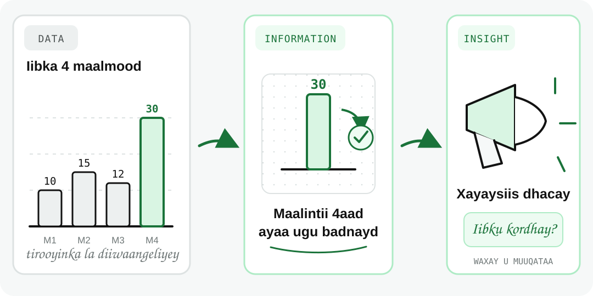
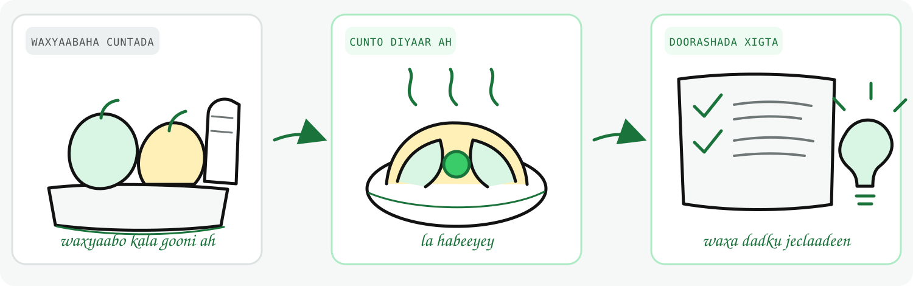

Waa maxay data?
Waxaad awoodi doontaa inaad sharaxdo waxa loola jeedo data (xog), isla markaana kala saarto data, information, iyo insight.
Dulmar
Waxaad eegtaa telefoonkaaga oo waxaad aragtaa lacag mobile money ah oo dhan $25, app-ka cimilada oo muujinaya 32°C, iyo fariin iskuulka ka timid oo ku saabsan xaadiritaankaaga.
Mid kasta waa data (xog): xaqiiqo yar oo ku saabsan wax jira ama dhacay.
Si aad data u fahanto, marka hore waa inaad jawaab cad u heshaa suʼaashan: “Waa maxay data?”
Waa maxay data?
Data (xog) waa xaqiiqooyin laga ururiyey wax jira ama dhacay. Waxay noqon kartaa tiro, eray, ama cabbir.
Mid kasta waa hal xaqiiqo. Kaligeed, data badanaa sheekadoo dhan ma sheegto.
Marka data badan la isu geeyo oo la habeeyo, waxaa ka soo baxa macne naga caawinaya inaan fahanno waxa dhacaya.
Data, Information, iyo Insight
Xaqiiqooyin aan weli la habayn
Data la habeeyey oo suʼaal ka jawaabaysa
Faham laga helay data oo kaa caawinaya goʼaan qaadasho
Tusaale fudud
Tirada alaabta uu dukaan afar maalmood iibiyey waxay ahayd 10, 15, 12, iyo 30 xabbo.

Tusaalaha cunto karinta
Waxaad sidan u xasuusan kartaa:

Halkee ayaan data ku aragnaa maalin kasta?
Waxaan data ku aragnaa nolol maalmeedkeenna:
Shirkadaha, iskuulada, isbitaallada, iyo dawladuhu waxay data u isticmaalaan inay wax fahmaan oo ay goʼaanno gaaraan.